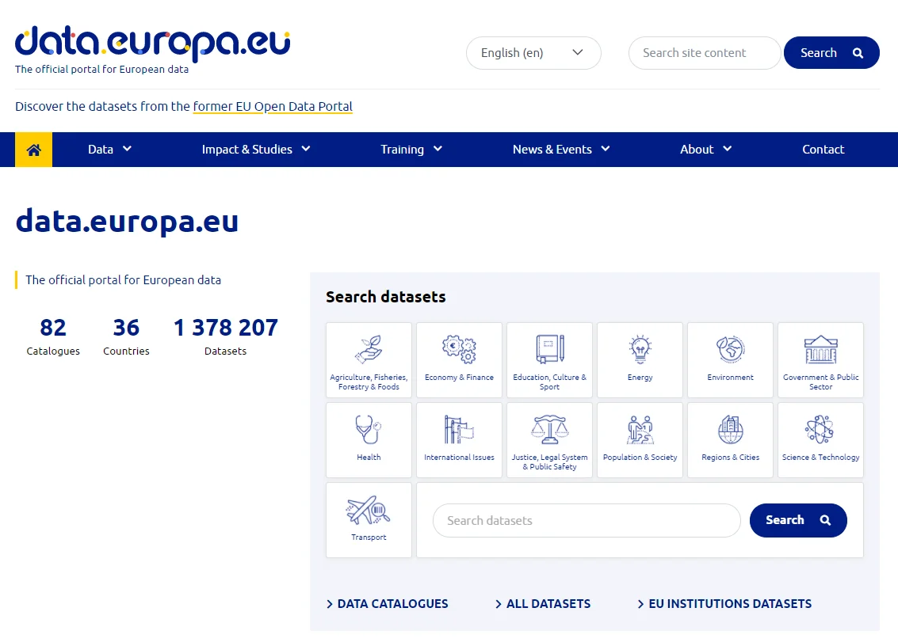

Kontext otevřených dat v ČR je dán mj. tím, že:
Hackatony jsou akce, na nichž zpravidla dobrovolníci – zejména programátoři a analytici – během několika dní vytvářejí nové aplikace či služby.
Některé hackatony jsou zaměřeny i na využití otevřených dat.
Prohlédněte si seznam aplikací, které vznikly jednom z takových hackatonů.
Tak jako existuje na národní úrovni Portál otevřených dat, existuje na úrovni EU Oficiální portál evropských dat.
Najdeme na něm metadata o sadách z mnoha datových portálů napříč Evropou – jeho součástí je i obsah NKOD.
Pokračujte prosím na fakultativní závěrečný test.